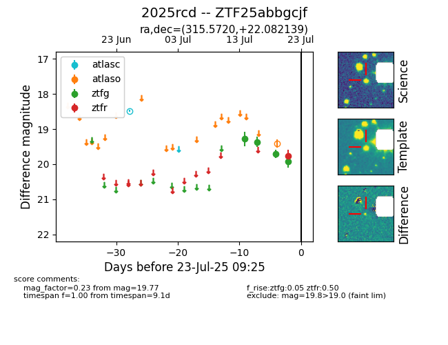

Target ZTF25abbgcjf at 2025-07-23 11:48, see:
FINK: fink-portal.org/ZTF25abbgcjf
Lasair: lasair-ztf.lsst.ac.uk/objects/ZTF25abbgcjf
ALeRCE: alerce.online/object/ZTF25abbgcjf
TNS: wis-tns.org/object/2025rcd
YSE: ziggy.ucolick.org/yse/transient_detail/2025rcd
alt names
ZTF25abbgcjf (ztf,fink)
2025rcd (tns,yse)
coordinates:
equatorial (ra, dec) = (315.5720,+22.08214)
galactic (l, b) = (68.7613,-15.91849)
photometry
last ztfg=19.92, ztfr=19.77
4 ztfg, 1 ztfr detections
